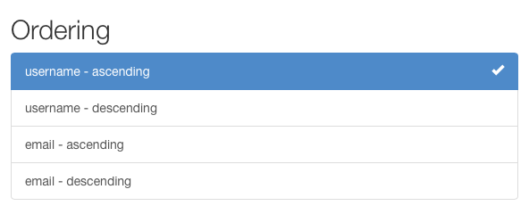

Filtering¶
The root QuerySet provided by the Manager describes all objects in the database table. Usually, though, you'll need to select only a subset of the complete set of objects.
The default behavior of REST framework's generic list views is to return the entire queryset for a model manager. Often you will want your API to restrict the items that are returned by the queryset.
The simplest way to filter the queryset of any view that subclasses GenericAPIView is to override the .get_queryset() method.
Overriding this method allows you to customize the queryset returned by the view in a number of different ways.
Filtering against the current user¶
You might want to filter the queryset to ensure that only results relevant to the currently authenticated user making the request are returned.
You can do so by filtering based on the value of request.user.
For example:
from myapp.models import Purchase
from myapp.serializers import PurchaseSerializer
from rest_framework import generics
class PurchaseList(generics.ListAPIView):
serializer_class = PurchaseSerializer
def get_queryset(self):
"""
This view should return a list of all the purchases
for the currently authenticated user.
"""
user = self.request.user
return Purchase.objects.filter(purchaser=user)
Filtering against the URL¶
Another style of filtering might involve restricting the queryset based on some part of the URL.
For example if your URL config contained an entry like this:
re_path('^purchases/(?P<username>.+)/$', PurchaseList.as_view()),
You could then write a view that returned a purchase queryset filtered by the username portion of the URL:
class PurchaseList(generics.ListAPIView):
serializer_class = PurchaseSerializer
def get_queryset(self):
"""
This view should return a list of all the purchases for
the user as determined by the username portion of the URL.
"""
username = self.kwargs['username']
return Purchase.objects.filter(purchaser__username=username)
Filtering against query parameters¶
A final example of filtering the initial queryset would be to determine the initial queryset based on query parameters in the url.
We can override .get_queryset() to deal with URLs such as http://example.com/api/purchases?username=denvercoder9, and filter the queryset only if the username parameter is included in the URL:
class PurchaseList(generics.ListAPIView):
serializer_class = PurchaseSerializer
def get_queryset(self):
"""
Optionally restricts the returned purchases to a given user,
by filtering against a `username` query parameter in the URL.
"""
queryset = Purchase.objects.all()
username = self.request.query_params.get('username')
if username is not None:
queryset = queryset.filter(purchaser__username=username)
return queryset
Generic Filtering¶
As well as being able to override the default queryset, REST framework also includes support for generic filtering backends that allow you to easily construct complex searches and filters.
Generic filters can also present themselves as HTML controls in the browsable API and admin API.

Setting filter backends¶
The default filter backends may be set globally, using the DEFAULT_FILTER_BACKENDS setting. For example.
REST_FRAMEWORK = {
'DEFAULT_FILTER_BACKENDS': ['django_filters.rest_framework.DjangoFilterBackend']
}
You can also set the filter backends on a per-view, or per-viewset basis,
using the GenericAPIView class-based views.
import django_filters.rest_framework
from django.contrib.auth.models import User
from myapp.serializers import UserSerializer
from rest_framework import generics
class UserListView(generics.ListAPIView):
queryset = User.objects.all()
serializer_class = UserSerializer
filter_backends = [django_filters.rest_framework.DjangoFilterBackend]
Filtering and object lookups¶
Note that if a filter backend is configured for a view, then as well as being used to filter list views, it will also be used to filter the querysets used for returning a single object.
For instance, given the previous example, and a product with an id of 4675, the following URL would either return the corresponding object, or return a 404 response, depending on if the filtering conditions were met by the given product instance:
http://example.com/api/products/4675/?category=clothing&max_price=10.00
Overriding the initial queryset¶
Note that you can use both an overridden .get_queryset() and generic filtering together, and everything will work as expected. For example, if Product had a many-to-many relationship with User, named purchase, you might want to write a view like this:
class PurchasedProductsList(generics.ListAPIView):
"""
Return a list of all the products that the authenticated
user has ever purchased, with optional filtering.
"""
model = Product
serializer_class = ProductSerializer
filterset_class = ProductFilter
def get_queryset(self):
user = self.request.user
return user.purchase_set.all()
API Guide¶
DjangoFilterBackend¶
The django-filter library includes a DjangoFilterBackend class which
supports highly customizable field filtering for REST framework.
To use DjangoFilterBackend, first install django-filter.
pip install django-filter
Then add 'django_filters' to Django's INSTALLED_APPS:
INSTALLED_APPS = [
...
'django_filters',
...
]
You should now either add the filter backend to your settings:
REST_FRAMEWORK = {
'DEFAULT_FILTER_BACKENDS': ['django_filters.rest_framework.DjangoFilterBackend']
}
Or add the filter backend to an individual View or ViewSet.
from django_filters.rest_framework import DjangoFilterBackend
class UserListView(generics.ListAPIView):
...
filter_backends = [DjangoFilterBackend]
If all you need is simple equality-based filtering, you can set a filterset_fields attribute on the view, or viewset, listing the set of fields you wish to filter against.
class ProductList(generics.ListAPIView):
queryset = Product.objects.all()
serializer_class = ProductSerializer
filter_backends = [DjangoFilterBackend]
filterset_fields = ['category', 'in_stock']
This will automatically create a FilterSet class for the given fields, and will allow you to make requests such as:
http://example.com/api/products?category=clothing&in_stock=True
For more advanced filtering requirements you can specify a FilterSet class that should be used by the view.
You can read more about FilterSets in the django-filter documentation.
It's also recommended that you read the section on DRF integration.
SearchFilter¶
The SearchFilter class supports simple single query parameter based searching, and is based on the Django admin's search functionality.
When in use, the browsable API will include a SearchFilter control:
The SearchFilter class will only be applied if the view has a search_fields attribute set. The search_fields attribute should be a list of names of text type fields on the model, such as CharField or TextField.
from rest_framework import filters
class UserListView(generics.ListAPIView):
queryset = User.objects.all()
serializer_class = UserSerializer
filter_backends = [filters.SearchFilter]
search_fields = ['username', 'email']
This will allow the client to filter the items in the list by making queries such as:
http://example.com/api/users?search=russell
You can also perform a related lookup on a ForeignKey or ManyToManyField with the lookup API double-underscore notation:
search_fields = ['username', 'email', 'profile__profession']
For JSONField and HStoreField fields you can filter based on nested values within the data structure using the same double-underscore notation:
search_fields = ['data__breed', 'data__owner__other_pets__0__name']
By default, searches will use case-insensitive partial matches. The search parameter may contain multiple search terms, which should be whitespace and/or comma separated. If multiple search terms are used then objects will be returned in the list only if all the provided terms are matched. Searches may contain quoted phrases with spaces, each phrase is considered as a single search term.
The search behavior may be specified by prefixing field names in search_fields with one of the following characters (which is equivalent to adding __<lookup> to the field):
| Prefix | Lookup | |
|---|---|---|
^ |
istartswith |
Starts-with search. |
= |
iexact |
Exact matches. |
$ |
iregex |
Regex search. |
@ |
search |
Full-text search (Currently only supported Django's PostgreSQL backend). |
| None | icontains |
Contains search (Default). |
For example:
search_fields = ['=username', '=email']
By default, the search parameter is named 'search', but this may be overridden with the SEARCH_PARAM setting in the REST_FRAMEWORK configuration.
To dynamically change search fields based on request content, it's possible to subclass the SearchFilter and override the get_search_fields() function. For example, the following subclass will only search on title if the query parameter title_only is in the request:
from rest_framework import filters
class CustomSearchFilter(filters.SearchFilter):
def get_search_fields(self, view, request):
if request.query_params.get('title_only'):
return ['title']
return super().get_search_fields(view, request)
For more details, see the Django documentation.
OrderingFilter¶
The OrderingFilter class supports simple query parameter controlled ordering of results.

By default, the query parameter is named 'ordering', but this may be overridden with the ORDERING_PARAM setting in the REST_FRAMEWORK configuration.
For example, to order users by username:
http://example.com/api/users?ordering=username
The client may also specify reverse orderings by prefixing the field name with '-', like so:
http://example.com/api/users?ordering=-username
Multiple orderings may also be specified:
http://example.com/api/users?ordering=account,username
Specifying which fields may be ordered against¶
It's recommended that you explicitly specify which fields the API should allow in the ordering filter. You can do this by setting an ordering_fields attribute on the view, like so:
class UserListView(generics.ListAPIView):
queryset = User.objects.all()
serializer_class = UserSerializer
filter_backends = [filters.OrderingFilter]
ordering_fields = ['username', 'email']
This helps prevent unexpected data leakage, such as allowing users to order against a password hash field or other sensitive data.
If you don't specify an ordering_fields attribute on the view, the filter class will default to allowing the user to filter on any readable fields on the serializer specified by the serializer_class attribute.
If you are confident that the queryset being used by the view doesn't contain any sensitive data, you can also explicitly specify that a view should allow ordering on any model field or queryset aggregate, by using the special value '__all__'.
class BookingsListView(generics.ListAPIView):
queryset = Booking.objects.all()
serializer_class = BookingSerializer
filter_backends = [filters.OrderingFilter]
ordering_fields = '__all__'
Specifying a default ordering¶
If an ordering attribute is set on the view, this will be used as the default ordering.
Typically you'd instead control this by setting order_by on the initial queryset, but using the ordering parameter on the view allows you to specify the ordering in a way that it can then be passed automatically as context to a rendered template. This makes it possible to automatically render column headers differently if they are being used to order the results.
class UserListView(generics.ListAPIView):
queryset = User.objects.all()
serializer_class = UserSerializer
filter_backends = [filters.OrderingFilter]
ordering_fields = ['username', 'email']
ordering = ['username']
The ordering attribute may be either a string or a list/tuple of strings.
Custom generic filtering¶
You can also provide your own generic filtering backend, or write an installable app for other developers to use.
To do so override BaseFilterBackend, and override the .filter_queryset(self, request, queryset, view) method. The method should return a new, filtered queryset.
As well as allowing clients to perform searches and filtering, generic filter backends can be useful for restricting which objects should be visible to any given request or user.
Example¶
For example, you might need to restrict users to only being able to see objects they created.
class IsOwnerFilterBackend(filters.BaseFilterBackend):
"""
Filter that only allows users to see their own objects.
"""
def filter_queryset(self, request, queryset, view):
return queryset.filter(owner=request.user)
We could achieve the same behavior by overriding get_queryset() on the views, but using a filter backend allows you to more easily add this restriction to multiple views, or to apply it across the entire API.
Customizing the interface¶
Generic filters may also present an interface in the browsable API. To do so you should implement a to_html() method which returns a rendered HTML representation of the filter. This method should have the following signature:
to_html(self, request, queryset, view)
The method should return a rendered HTML string.
Third party packages¶
The following third party packages provide additional filter implementations.
Django REST framework filters package¶
The django-rest-framework-filters package works together with the DjangoFilterBackend class, and allows you to easily create filters across relationships, or create multiple filter lookup types for a given field.
Django REST framework full word search filter¶
The djangorestframework-word-filter developed as alternative to filters.SearchFilter which will search full word in text, or exact match.
Django URL Filter¶
django-url-filter provides a safe way to filter data via human-friendly URLs. It works very similar to DRF serializers and fields in a sense that they can be nested except they are called filtersets and filters. That provides easy way to filter related data. Also this library is generic-purpose so it can be used to filter other sources of data and not only Django QuerySets.
drf-url-filters¶
drf-url-filter is a simple Django app to apply filters on drf ModelViewSet's Queryset in a clean, simple and configurable way. It also supports validations on incoming query params and their values. A beautiful python package Voluptuous is being used for validations on the incoming query parameters. The best part about voluptuous is you can define your own validations as per your query params requirements.